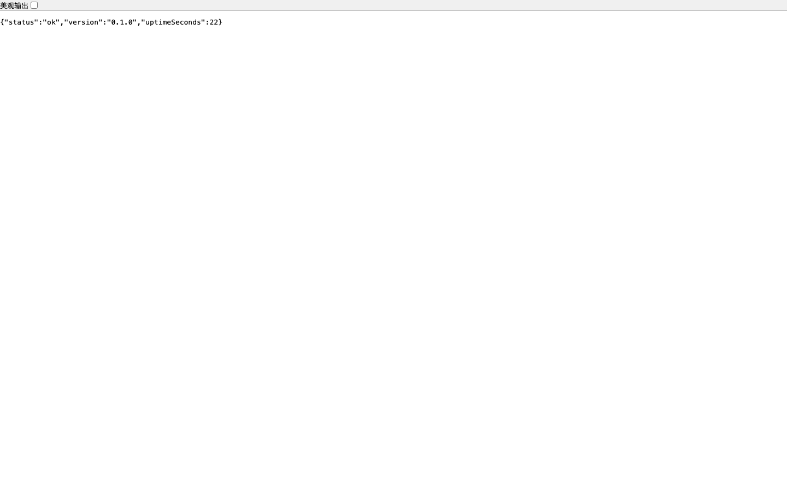
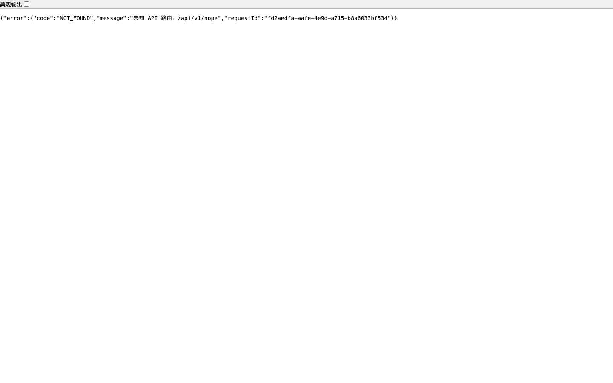
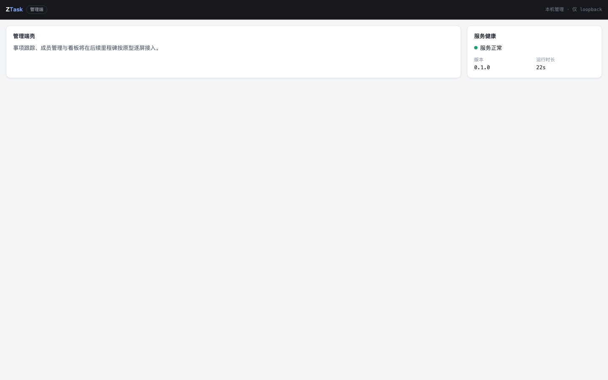
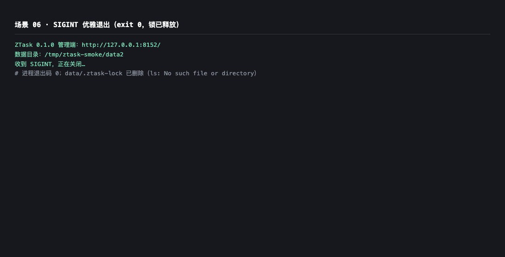
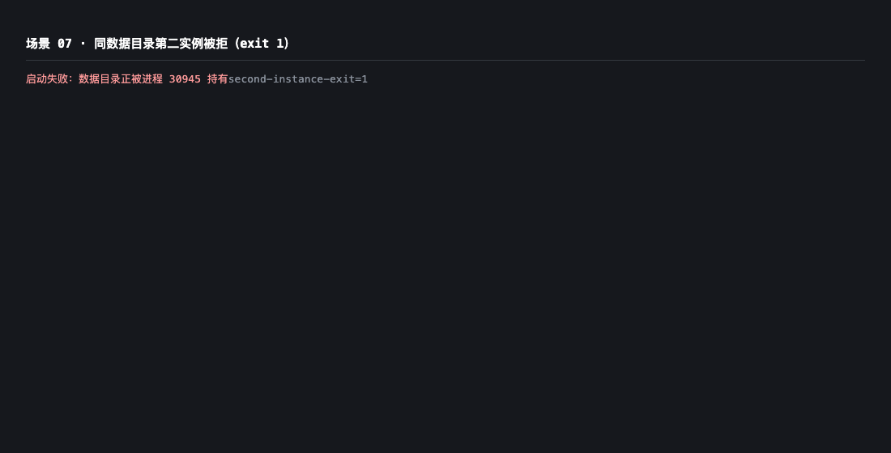
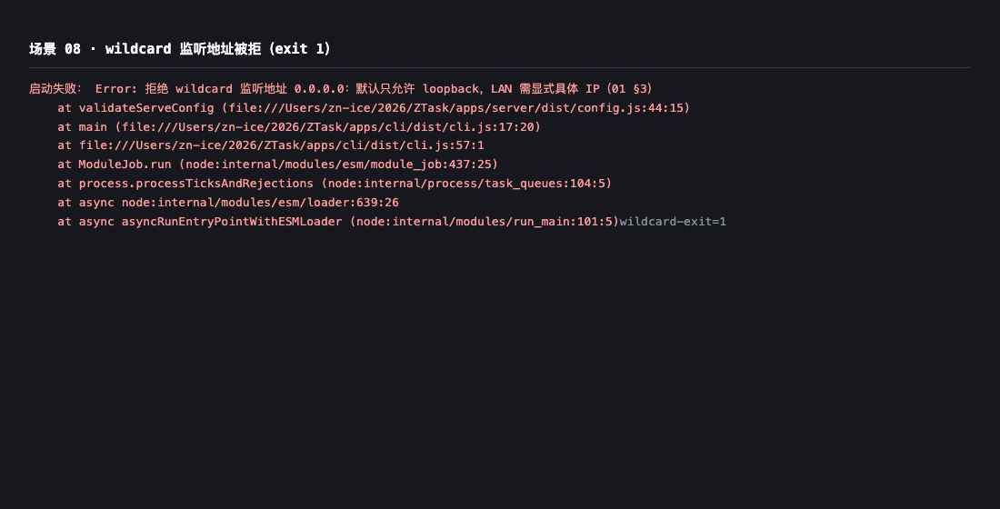

- 被测对象
- ZTask m2-app-bootstrap（CLI + Fastify 同源服务 + Vue 壳）
- 产物
- apps/cli/dist/cli.js + apps/server/dist + apps/web/dist（pnpm build 全量构建）
- 启动方式
- node apps/cli/dist/cli.js serve --port 8151 --data-dir <临时目录> --no-open
- 代码版本
- feat/m2-app-bootstrap @ e2a245e（PR #26 head）
- 取证方式
- Chrome headless 截图（页面/JSON/日志渲染）；进程行为以退出码与锁目录状态佐证
Computer Use Smoke Reporting
ZTask m2 应用基座 · 集成冒烟报告（PR #26 / issue #12）
对 PR #26 交付的可运行全栈基座做打包产物级冒烟：真实构建（pnpm build）后以 node 直启 ztask serve，覆盖启动、管理端壳渲染、健康检查、未知 API 404、SPA 深链回退、SIGINT 优雅退出、数据目录锁互斥与 wildcard 拒绝 8 个场景，全部通过，无缺陷遗留。
8冒烟场景
8/8通过
0缺陷遗留
33自动化用例（同分支）
Environment and Artifact
2026-11-02 · macOS (darwin) · Node v25.9.0 本地运行（CI 目标 Node 22）· 产物 commit e2a245eScenario Matrix
8 pass| # | 场景 | 结果 | 明细 | 证据 |
|---|---|---|---|---|
| 01 | 打包产物启动 | PASS | pnpm build 后单进程起服，打印管理 URL 与数据目录，仅绑定 127.0.0.1。 | screenshots/01-admin-shell.png |
| 02 | 管理端壳渲染 | PASS | 深色顶栏 + 品牌蓝 + 卡片圆角阴影与原型 :root 令牌一致；健康卡实时显示版本与运行时长。 | screenshots/01-admin-shell.png |
| 03 | 健康检查 GET /api/v1/health | PASS | 返回 200 JSON：{"status":"ok","version":"0.1.0","uptimeSeconds":…}，匿名可访问。 | screenshots/03-health-api.png |
| 04 | 未知 API 统一 404 | PASS | /api/v1/nope 返回 404 application/json，body 含 error.code=NOT_FOUND 与 requestId，绝不返回 index.html。 | screenshots/04-unknown-api-404.png |
| 05 | SPA 深链回退 | PASS | /some/deep/route 回退 index.html（200），管理端壳正常挂载。 | screenshots/05-spa-deeplink.png |
| 06 | SIGINT 优雅退出 | PASS | kill -INT 后打印关闭日志、exit 0、数据目录 .ztask-lock 释放，无残留子进程。 | screenshots/06-graceful-shutdown.png |
| 07 | 数据目录锁互斥 | PASS | 同 data-dir 第二实例退出码 1，报「数据目录正被进程 N 持有」；主实例不受影响。 | screenshots/07-second-instance.png |
| 08 | wildcard 监听拒绝 | PASS | --host 0.0.0.0 被配置校验拒绝（exit 1），提示默认仅允许 loopback。 | screenshots/08-wildcard-reject.png |
Issues and Observations
No defects foundNo defects were found.
Evidence
7 screenshots





Automated Coverage Assessment
4 areas reviewed| 领域 | 自动化覆盖 | 结论 | 建议 |
|---|---|---|---|
Conclusion
全部通过 · 可合并8 个冒烟场景全部 PASS，无缺陷遗留；同分支自动化 33 用例全绿，CI（build-and-docs / flow-online）双 job 通过。
- LAN 实网监听冒烟在 #20（动态 LAN 分享）交付时补齐
- dev 开发流（热重启/代理联动）按检视结论在 #14 统一处理
ZTask · computer-use-smoke-reporting · 报告由 report-data.json 生成，请勿手改 HTML